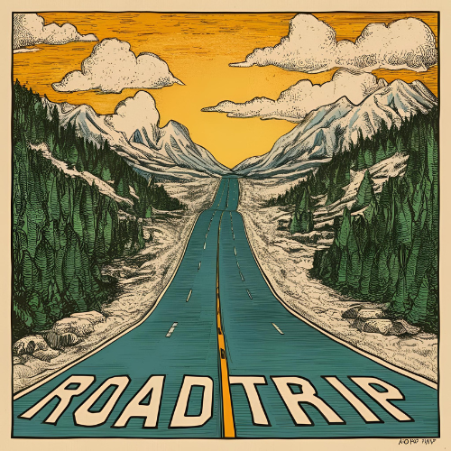

Do campo
à cidade
-conexões-

Descubra o melhor dos dois mundos: paisagens tranquilas do campo e a vibração cultural da cidade. Aqui, você encontra roteiros que conectam natureza, cultura, gastronomia e história em um só lugar.
"Do verde ao concreto: Experiências que encantam"
ROTEIROS RURAIS
-
Recanto Catarina - Hotel Resort
São João D'oeste, Cascavel - PR - No recanto Catarina, você encontra: cabanas, locais com piscinas, locais para eventos, áreas verdes, locais com música.
ROTEIROS URBANOS
-
Zoológico Municipal de Cascavel
localizado no Bairro São Cristóvão.